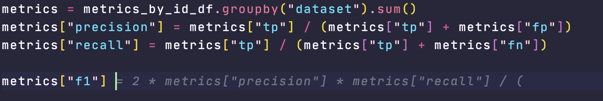

AI assistants like Github Copilot and ChatGPT promise breakthrough productivity improvements for developers. In this article, I’ll explore how these tools can be used in a data science workflow and evaluate their usefulness across 5 real-world tasks.
The main takeaway: Assistants greatly speed up coding using common libraries, but are less helpful for other tasks that go into a successful project.
My setup: VSCode + Raycast AI
Before we dive into the tasks, let me describe my setup. I use VSCode with Copilot and GPT-4 via Raycast AI. Raycast AI provides a chat box that connects to GPT-4 and has a shortcut and one-tap copy of suggested code. I also have some shortcuts in Raycast AI to speed up my workflow:
- Find bugs in my code
- Improve this code
- Explain code step by step

As an example, running “Improve this code” on a selection of text will send it to GPT-4, with the instruction
Check the following code and give advice on how to make it more reliable, secure and easy to read.

Example tasks
As a data scientist on a small team, I wear many hats, from machine learning engineer to cloud architect. Consequently, I often have to work with languages, libraries and tools that I don’t have much experience with.
Here are 5 tasks I worked on in the last few weeks and my evaluation of how much AI tools have helped me.
1. Writing a Python script to evaluate a model
The first task was to write a Python script to evaluate Azure’s PII redaction API on a dataset of social media posts containing PII. The task mainly involved writing pandas code to load data and calculate metrics. Copilot was helpful in speeding up the process by suggesting entire sections of code that I could use without modifications.
Usefulness: 5/5

2. Defining AWS infrastructure using Terraform
Next, a colleague and I set up a database migration using AWS Database Migration Service (DMS), set up via Terraform. I asked GPT-4 to generate the configuration, and then I asked it more detailed questions, such as how to convert data types. However, the model frequently hallucinated: it made up options that don’t actually exist in AWS DMS. Overall, it was more confusing than helpful.
Usefulness: 1/5
3. Creating, testing and documenting models in dbt
I created, tested, and documented models in dbt. Copilot made writing SQL for the models faster and was especially good at speeding up my workflow of documenting those models in the schema.yml files. However, since it didn’t know the database schema, it hallucinated tables and columns that don’t exist. GPT-4 was useful for thinking through the deployment of dbt-core on AWS ECS, especially the use of environment variables and the project.yml config file.
Usefulness: 3/5
4. Adjusting a web scraper in JavaScript
For the next task, I heavily relied on GPT-4. I had to adjust a web scraper to cover a different path of the target website. The scraper is written in JavaScript, which I’m not familiar with. Here, the “explain step-by-step” shortcut was helpful. GPT-4 was like an expert JS dev patiently explaining the code line by line. However, GPT-4 couldn’t see the target website and didn’t have access to the website’s html. Copying it over was tedious. I found it easier to use the SelectorGadget Chrome extension to find relevant CSS selectors.
Usefulness: 4/5
5. Choosing a dashboard tool
A new project required building a dashboard, and it was my task to evaluate tools based on features, usability, and price. I tested many GUI-based tools (Metabase, Superset, Tableau, PowerBI and others). GPT-4 could list relevant decision criteria but couldn’t make the decision for me. It wasn’t useful as an information source because of the knowledge cutoff in 2021.

10 Takeaways
- Copilot and GPT-4 are at their best helping to write code in commonly used libraries like pandas.
- As text-based models, Copilot and GPT-4 provide better help for code (text) based apps than GUIs.
- AI assistants are at their best in small projects with a low number of files, ideally just one notebook.
- They are ideal for working on simple tasks in languages that you’re not familiar with.
- The models don’t have the context of your project, company, and client, which are critical for more strategic decisions.
- There’s no good tooling for showing GPT-4 data frames or tables in SQL. This limitation means it can’t contribute to the interpretation.
- The 2021 training data cutoff for GPT-4 diminishes its usefulness for information retrieval.
- Rubber duck debugging is an effective technique for overcoming blocks. Now we have v2 with a duck that can reply. Chatting with GPT-4 about programming challenges helped me.
- LLMs are best for delegating details, so you can focus on the bigger picture. Knowing what and how to ask is critical and being aware of typical sources of hallucinations.
- GPT-4 currently can’t run a non-trivial data science project by itself. It’s more independent than Copilot but not good enough to be an autopilot.
Differentiating yourself as a data scientist in an AI-future
So what sets a successful data scientist apart in a world with powerful AI assistants?
- Understanding of the domain and business
- Building trust with clients
- Identifying the right questions to work on and the best format to report answers
- Systems design and overview of the project
- Detect hallucinations of AI models
Knowing how to code is not enough to differentiate oneself.
Early on the long arc of innovation

While the hype it peaking, it’s still early days for the technology. Today’s tools are like black and white TV in the 1960s and the future will bring tools equivalent to OLED 4k TVs. In the next few months already, we’ll see better models thanks to:
- Larger context windows enable models to take more information into account: GPT-4 supports up to 32k tokens, whereas GPT-3.5 was limited to 4k
- Plugins and chains via ChatGPT plugins and the langchain library. These give models access to the browser, Wolfram Alpha and more
- Let models store context information and access data via LlamaIndex Integration into more developer tasks, such as pull requests via Github Copilot X
- Agents that recursively call GPT-4, see Auto-GPT